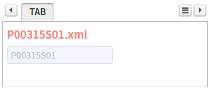
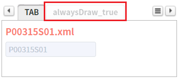
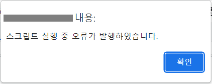

TabControl의 함수 'addTab'의 세 번째 인자 JSON 객체의 'alwaysDraw' 설정 값 비교 예제입니다. 세 번째 인자는 콘텐츠에 관련된 옵션들로 구성되어있습니다. 'alwaysDraw'는 새로 추가될 탭의 콘텐츠가 화면에 보이지 않을 때, 해당 콘텐츠를 화면(브라우저)에 구성할지 여부를 지정할 수 있습니다. 이 옵션을 true로 설정하고 콘텐츠 옵션 'frameMode'의 값을 'wframePreload'로 설정하면 함수 'addTab' 호출 후 탭 콘텐츠에 접근할 수 있습니다.
콘텐츠 옵션 'alwaysDraw'의 설정 값에 따른 동작 방식은 다음과 같습니다.
- false : (기본 값) 콘텐츠가 보이지 않으면, 콘텐츠를 구성하지 않습니다. 콘텐츠가 보여질 때 구성합니다.
- true : 콘텐츠를 구성합니다.
탭의 수가 많거나, 구성된 탭의 콘텐츠가 복잡하여 화면의 로딩 속도가 느리다면 'alwaysDraw'를 false로 설정하여 로딩 속도를 개선할 수 있습니다.
false로 지정되면 콘텐츠가 구성되기 전까지 탭의 콘텐츠에 접근이 불가할 수 있으므로, 로직 구성 시 유의해야합니다. ('alwaysDraw'를 false로 지정하고 탭 콘텐츠에 접근해야 하는 경우에는, TabControl의 이벤트 'ondrawcomplete'를 사용합니다.)
탭 추가 후 탭 콘텐츠의 InputBox의 값 반환받기 - 콘텐츠 옵션 'alwaysDraw'을 true로 지정
탭 추가 후 탭 콘텐츠의 InputBox의 값 반환받기 - 콘텐츠 옵션 'alwaysDraw'을 false로 지정
STEP 1. 초기 상태를 확인합니다.
TabControl에 탭 'TAB'이 구성되어 있습니다. 탭 콘텐츠는 wframe으로 파일 '/page/P00315S01.xml'이 링크되어 있습니다. 버튼을 클릭하여 탭 추가 시 동일한 파일이 wframe에 구성됩니다.
그림 1.브라우저(Chrome) 실행 예시

STEP 2. 탭을 추가합니다.
버튼 1-1. 탭 추가 - 'alwaysDraw'를 true로 설정를 클릭합니다.
함수 'addTab'이 다음과 같은 인자로 호출됩니다.함수 'addTab'의 인자
"tac_exam1_alwaysDraw_true", { "label": "alwaysDraw_true", "openAction": "select", "disabled": true }, { "src": "/page/P00315S01.xml", "wframe": true, "alwaysDraw": true, // 필수 "frameMode": "wframePreload" // 필수 }
STEP 3. 실행된 결과를 확인합니다.
탭 'alwaysDraw_true'이 비활성화되어 추가됩니다. 탭 'TAB'이 선택된 상태로, 탭 'alwaysDraw_true'은 선택되지 않은 상태입니다. 추가된 탭의 콘텐츠는 탭 'TAB'에 구성된 파일과 동일합니다.
그림 2.브라우저(Chrome) 실행 예시

STEP 4. 추가한 탭 콘텐츠에 구성된 InputBox의 값을 반환받습니다.
버튼 1-2. 탭 'alwaysDraw_true'의 InputBox 값 반환받기를 클릭합니다.STEP 3. 실행된 결과를 확인합니다.
탭 콘텐츠의 InputBox에 값을 반환받는 스크립트가 실행됩니다. 화면의 로그 확인 textarea 또는 브라우저의 개발자 도구의 콘솔(console)탭에 출력된 로그를 확인합니다.
로그
[17:55:01] # 탭 'alwaysDraw_true'의 콘텐츠의 'ibx_exam1'의 value: P00315S01
STEP 1. 초기 상태를 확인합니다.
TabControl에 탭 'TAB'이 구성되어 있습니다. 탭 콘텐츠는 wframe으로 파일 '/page/P00315S01.xml'이 링크되어 있습니다. 버튼을 클릭하여 탭 추가 시 동일한 파일이 wframe에 구성됩니다.
그림 3.브라우저(Chrome) 실행 예시
STEP 2. 탭을 추가합니다.
버튼 2-1. 탭 추가 - 'alwaysDraw'를 false로 설정를 클릭합니다.
함수 'addTab'이 다음과 같은 인자로 호출됩니다.함수 'addTab'의 인자
"tac_exam1_alwaysDraw_false", { "label": "alwaysDraw_false", "openAction": "select", "disabled": true }, { "src": "/page/P00315S01.xml", "wframe": true, "alwaysDraw": false // 필수 }
STEP 3. 실행된 결과를 확인합니다.
탭 'alwaysDraw_false'이 비활성화되어 추가됩니다. 탭 'TAB'이 선택된 상태로, 탭 'alwaysDraw_false'은 선택되지 않은 상태입니다. 추가된 탭의 콘텐츠는 탭 'TAB'에 구성된 파일과 동일합니다.
그림 4.브라우저(Chrome) 실행 예시
STEP 4. 추가한 탭 콘텐츠에 구성된 InputBox의 값을 반환받습니다.
버튼 1-2. 탭 'alwaysDraw_false'의 InputBox 값 반환받기를 클릭합니다.STEP 3. 실행된 결과를 확인합니다.
탭 콘텐츠의 InputBox에 값을 반환받는 스크립트가 실행됩니다. 추가된 탭이 브라우저에 구성되지 않아 스크립트 실행 중 오류가 발생합니다. 안내 메시지가 alert됩니다. 화면의 로그 확인 textarea 또는 브라우저의 개발자 도구의 콘솔(console)탭에 출력된 로그를 확인합니다.
그림 5.브라우저(Chrome) 실행 예시

로그
[18:03:32] # 오류 발생 탭 'alwaysDraw_false'의 콘텐츠 접근 중 오류 발생. Cannot read properties of undefined (reading 'getValue')
TabControl의 함수 'addTab'를 이용하여 스크립트를 작성합니다. 옵션 'alwaysDraw'은 함수 'addTab'의 세 번째 인자 JSON 객체에 설정합니다. 세부 지정은 아래의 스크립트 예시에 작성되어 있습니다.
스크립트
// 함수 'addTab' 호출 후 결과 값을 반환받거나, 탭 콘텐츠에 접근하는 스크립트를 작성하려면 async/await 키워드를 사용해야 합니다. /** * 버튼 [1-1. 탭 추가 - 'alwaysDraw'를 true로 설정] 클릭 시 */ scwin.btn_exam1_1_onclick = async function (e) { // TabControl 'tac_exam1'에 탭 추가하기 - "alwaysDraw": true let result = await tac_exam1.addTab( "tac_exam1_alwaysDraw_true", { "label": "alwaysDraw_true", "openAction": "select", "disabled": true }, { "src": "/page/P00315S01.xml", "wframe": true, "alwaysDraw": true, // 필수 "frameMode": "wframePreload" // 필수 } ); // 추가된 탭 콘텐츠의 컴포넌트에 접근하는 경우 // 1. 탭 콘텐츠 객체 반환 받기 let objContWindow = tac_exam1.getWindow("tac_exam1_alwaysDraw_true"); // 2. 탭 콘텐츠의 InputBox 'ibx_exam1' 객체 반환 받기 let cmpInput = objContWindow.$p.getComponentById("ibx_exam1"); // 3. 탭 콘텐츠의 InputBox 'ibx_exam1'의 value 꺼내오기 let strInputValue = cmpInput.getValue(); };
TabControl의 함수 'addTab'를 이용하여 스크립트를 작성합니다. 옵션 'alwaysDraw'은 함수 'addTab'의 세 번째 인자 JSON 객체에 설정합니다. 세부 지정은 아래의 스크립트 예시에 작성되어 있습니다.
스크립트
// TabControl 'tac_exam1'에 탭 추가하기 - "alwaysDraw": false tac_exam1.addTab( "tac_exam1_alwaysDraw_false", { "label": "alwaysDraw_false", "openAction": "select", "disabled": true }, { "src": "/page/P00315S01.xml", "wframe": true, "alwaysDraw": false // 필수 } );
addTab( id , tabOpt , contOpt )
contOpt.alwaysDraw
contOpt.frameMode
[웹스퀘어5 SP5 개발 가이드] TabControl
링크 : https://docs1.inswave.com/sp5_user_guide/2059d4ce88b2fc16#0eeccc9d7fde2d33
[웹스퀘어5 SP5 개발 가이드] TabControl 탭 생성 (addTab)
링크 : https://docs1.inswave.com/sp5_user_guide/2059d4ce88b2fc16#18a2383c9b7504c2